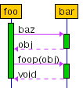
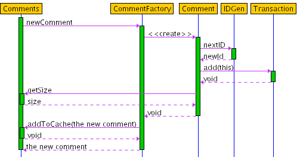

SEQUENCE is a program for producing UML Sequence Diagrams. In contrast to most similar programs you don't actually draw the diagram. Instead you write a textual description of the method calls you want to diagram and the layout is calculated and drawn automatically.
Although you don't have the exact control over the layout that a drawing program gives you I think this has a couple of advantages. Firstly, it's much quicker to express what you want this way, and that is the point of the diagrams after all. Secondly, I find it easier to achieve a good looking result this way rather than having to manually position each element.
For instance the diagram below is easy to define.

You just have to write this description.
foo {
bar.baz -> obj;
bar.foop(obj);
}
The more complete example show below is provided by the Example option under the Help menu.
It demonstrates most of the features of the language used to describe sequence diagrams.

This description is used to produce the diagram.
Comments.newComment {
CommentFactory.newComment -> "the new comment" {
Comment.<> {
IDGen.nextID -> newId;
Transaction.add(this);
Comments.getSize -> size;
}
Comments.addToCache(the new comment);
}
}